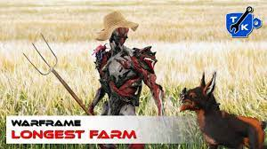
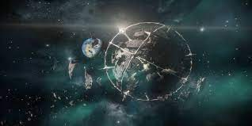
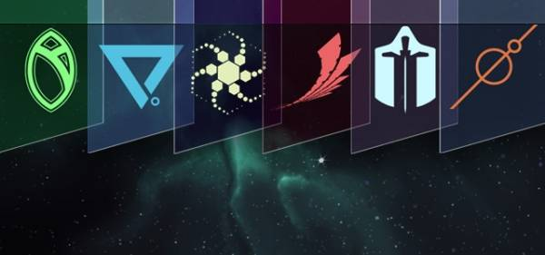

En Warframe hay varias cosas que puedes hacer. Puedes
farmear,
seguir con la historia principal o
ayudar a las facciones a hacerse más grandes.

Si eliges farmear, deberás pasar MUCHO tiempo para poder obtener
todos los recursos necesarios para crear las armas y personajes para
seguir avanzando en tu gran travesía.

Si eliges contuinuar con la historia principal, te encontraras con
grandes desafíos, pero te valdrá la pena. Pues este juego tiene una
historia muy buena que te atrapa desde el primer momento.

Si eliges ayudar a las facciones, podrás recibir grandes
recompensas. Además, podrás subir de nivel en estas facciones y
obtendrás mejores recompensas.